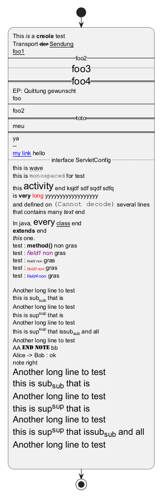

@startuml
start
:This //is// a **creole** test
Transport --der-- __Sendung__
__foo1__
--foo2--
..<size:20>foo3..
==<size:20>foo4==
EP: Quittung gewunscht
foo
----
foo2
==toto==
meu
====
ya
--
[[http://www.cot{cloud} my link]] hello
.. interface ServletConfig ..
this is ~~wave~~
this is ""monospaced"" for test
this <size:20>activity</size> end ksjdf sdf sqdf sdfq
is <b>very</b> <color:red>long</color> yyyyyyyyyyyyyyyyyy
and defined on <img:../HelloWorld.png> several lines
that contains many <i>text</i> end
In java, <size:18>every</size> <u>class</u> end
<b>extends</b> end
<i>this</i> one.
test : <b>method()</b> non gras
test : <font color=purple><i>field1</i> non</font> gras
test : <font size=7><i>field2</i> non</font> gras
test : <font size=8 color=red><i>field3</i> non</font> gras
test : <font color=blue size=9><i>field4</i> non</font> gras
Another long line to test
this is sub<sub>sub</sub> that is
Another long line to test
this is sup<sup>sup</sup> that is
Another long line to test
this is sup<sup>sup</sup> that issub<sub>sub</sub> and all
Another long line to test
AA <font:Stencil>end note</font> bb
Alice -> Bob : ok
note right
<size:18>Another long line to test
<size:18>this is sub<sub>sub</sub> that is
<size:18>Another long line to test
<size:18>this is sup<sup>sup</sup> that is
<size:18>Another long line to test
<size:18>this is sup<sup>sup</sup> that issub<sub>sub</sub> and all
<size:18>Another long line to test
;
stop
@enduml